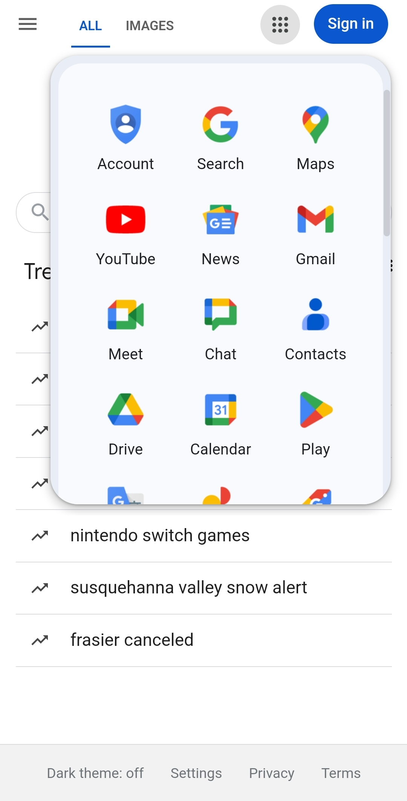

Alignment
Company Name: Apple
Website: Apple

Description: Apple's website uses alignment by ensuring that every element on the page is placed in relation to others in an organized and clean manner. This creates a cohesive layout that guides the user’s eye flow naturally from one section to another.
Repetition
Company Name: Google
Website: Google
Description: Google's website uses repetition through consistent use of colors, fonts, and icons across their web pages. This repetition ensures a seamless, unified user experience irrespective of the page visited.
Contrast
Company Name: Amazon
Website: Amazon

Description: Amazon's website exemplifies contrast by using different colors, sizes, and styles to highlight essential elements such as sales, product discounts, and call-to-action buttons. The contrast draws user attention directly to key pieces of information, enhancing usability and navigation.